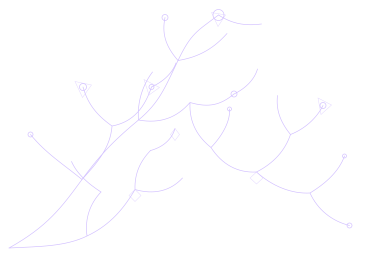

I turn complex tech topics into clear, user-friendly content. From well-structured blogs to thoughtful articles, I write to inform, engage, and make ideas easier to understand.
I'm a technical writer who enjoys turning complicated subjects into clear, user-friendly stories.
My focus is on making information easier to follow without sanding away what makes it interesting. I like thoughtful structure, useful research, and writing that respects a reader's time.
From technology explainers to articles about the internet and the way we use it, the goal stays the same: make the idea understandable, memorable, and worth reading.
CURIOUS BY DEFAULT.PRECISE BY DESIGN.
NOT MORE WORDS.—THE RIGHT WORDS.✳
03 / WHAT I WRITEA FEW WAYS TO WORK TOGETHER
Useful words. Real readers.
Clear language is not about making ideas smaller. It's about making the important parts easier to see.
01
Technical explainers
Complex subjects made accessible without losing the detail.
✳↗02
Blogs & long-form articles
Well-structured writing with a clear idea at its centre.
≋↗03
SEO-aware content
Reader-first articles shaped around search intent and structure.
[ ]↗
04 / THE PROCESSA GOOD STORY IS BUILT, NOT GUESSED
From question to something clear.

01
Get curious
Find the real question behind the brief.
02
Do the reading
Gather context, check the facts, understand the audience.
03
Find the thread
Build a structure that lets the idea breathe.
04
Make it land
Edit for clarity, rhythm, accuracy, and usefulness.
THOUGHTFUL RESEARCH+STRUCTURE THAT SERVES THE READER+WORDS THAT WORK
05 / GET IN TOUCHOPEN TO NEW CONVERSATIONS
HAVE A COMPLICATED IDEA?
Let's make it make sense.
Got a story, subject, or project that needs clearer words? Let's talk.